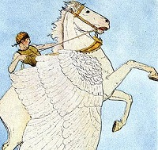
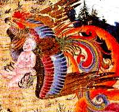

This is an illustration from
Al-Qazwīnī’s
Ajā’īb al-makhlūqāt wa gharā’ib al-mawjūdāt, a Persian translation
published in 19th century India. A centaur named Firenze eludes to Voldemort's return in
Book 1,
Harry Potter and the Sorcerer's Stone.
In our project, we attempt to discover which languages - from a
sampling of languages across the Indo-European language family - Google Translate
processes most successfully and why in the context of Harry Potter
texts.
The Indo-European languages correspond with a myriad of cultures,
each heir to inter-related legacies of mythology and folklore. Is Harry
Potter, currently available in 67 different languages, modern folklore on a
mass scale? In creating her series, J.K. Rowling derived the characters from ancient
literary cannons, Indo-European and beyond. Phoenixes, centaurs, ghouls, and more
manifest throughout world history in hundreds of linguistic and cultural
forms.
There are thousands of languages, and even more dialects, spoken
throughout the globe. Explore a segment of the world languages according to these
universally enchanting entities. To navigate, hover and click on the language
families listed in the key above.
The Hellenic
Branch
There are
thousands of languages, and even more dialects, spoken throughout the globe. Explore
a segment of the world languages according to these universally enchanting entities.
To navigate, hover and click on the language families listed in the key above.
There are
thousands of languages, and even more dialects, spoken throughout the globe. Explore
a segment of the world languages according to these universally enchanting entities.
To navigate, hover and click on the language families listed in the key
above.
The Indo-Iranian
Branch
There are
thousands of languages, and even more dialects, spoken throughout the globe. Explore
a segment of the world languages according to these universally enchanting entities.
To navigate, hover and click on the language families listed in the key above.
There are
thousands of languages, and even more dialects, spoken throughout the globe. Explore
a segment of the world languages according to these universally enchanting entities.
To navigate, hover and click on the language families listed in the key above.
The Italic
Branch
There are
thousands of languages, and even more dialects, spoken throughout the globe. Explore
a segment of the world languages according to these universally enchanting entities.
To navigate, hover and click on the language families listed in the key above.
There are thousands
of languages, and even more dialects, spoken throughout the globe. Explore a segment
of the world languages according to these universally enchanting entities. To
navigate, hover and click on the language families listed in the key above.
There are
thousands of languages, and even more dialects, spoken throughout the globe. Explore
a segment of the world languages according to these universally enchanting entities.
To navigate, hover and click on the language families listed in the key above.